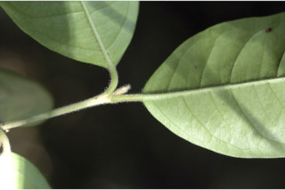
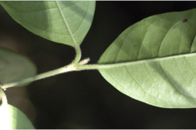

Large shrubs to small trees up to 5 m tall.
5 ಮೀ. ಎತ್ತರದವರೆಗಿನ ಸಣ್ಣ ದೊಡ್ಡ ಗಾತ್ರದ ಪೊದೆಗಳು ಅಥವಾ ಸಣ್ಣ ಮರಗಳು.
Large shrubs to small trees up to 5 m tall.
பெரிய குத்துச்செடி முதல் சிறிய மரம் 5 மீ. உயரம் வரை வளரக்கூடியது.
Bark brownish, smooth.
ತೊಗಟೆ ಕಂದು ಛಾಯೆ ಹೊಂದಿರುತ್ತದೆ ಮತ್ತು ನಯವಾಗಿರುತ್ತದೆ.
Bark brownish, smooth.
மரத்தின் பட்டை ப்ரவுன் நிறமானது, வழவழப்பானது.
Young branchlets terete, pubescent; young flush reddish.
ಎಳೆಯ ಕಿರುಕೊಂಬೆಗಳು ದುಂಡಾಗಿದ್ದು ಮೃದುತುಪ್ಪಳದಿಂದ ಆವೃತಗೊಂಡಿರುತ್ತವೆ;ಎಳೆಯ ಕಿರುಕೊಂಬೆಗಳು ಕೆಂಪು ಛಾಯೆಯನ್ನು ಹೊಂದಿರುತ್ತವೆ.
Young branchlets terete, pubescent; young flush reddish.
சிறியநுனிக்கிளைகள் குறுக்குவெட்டுத் தோற்றத்தில் வளையமானது, உரோமங்களுடையது; இளம்பருவத்தில் இலைகள் சிவப்பு நிறமானது.
Leaves simple, opposite, decussate; petiole 0.5-0.8 cm long, canaliculate, pubescent when young; lamina 7-14.5 x 2.7-5.5 cm, elliptic or elliptic-ovate, apex acuminate with blunt tip, base acute, margin entire, chartaceous, glabrous; midrib canaliculate above; secondary_nerves 10-15 pairs, not prominent, joining as loop near margin; tertiary_nerves broadly reticulate.
ಎಲೆಗಳು ಸರಳವಾಗಿದ್ದು ಅಭಿಮುಖವಾಗಿ ಜೋಡನೆಗೊಂಡಿದ್ದು ಕಾಂಡದ ಎರಡೂ ಕಡೆ ಎದುರು ಬದರಿನ ಲಂಬ ಸಾಲಿನಲ್ಲಿರುತ್ತವೆ; ತೊಟ್ಟುಗಳು 0.5 – 0.8 ಸೆಂ.ಮೀ. ಉದ್ದವಿದ್ದು ಕಾಲುವೆಗೆರೆ ಸಮೇತವಿರುತ್ತವೆ ಮತ್ತು ಎಳೆಯದಾಗಿದ್ದಾಗ ವಾದ ಮೃದುತುಪ್ಪಳದಿಂದ ಕೂಡಿರುತ್ತವೆ;ಪತ್ರಗಳು 7 – 14.5 X2.7 – 5.5 ಸೆಂ.ಮೀ.ವರೆಗಿನ ಗಾತ್ರವಿದ್ದು ಅಂಡವೃತ್ತ ಅಥವಾ ಅಂಡವೃತ್ತ-ಅಂಡದ ಆಕಾರ ಹೊಂದಿದ್ದು,ಮೊಂಡಾಗ್ರವುಳ್ಳ ಕ್ರಮೇಣ ಚೂಪಾದ ತುದಿ,ಚೂಪಾದ ಬುಡ,ನಯವಾದ ಅಂಚು, ಕಾಗದವನ್ನೋಲುವ ಮೇಲ್ಮೈ ಹೊಂದಿದ್ದು ರೊಮರಹಿತವಾಗಿರುತ್ತವೆ;ಮಧ್ಯ ನಾಳ ಪತ್ರದ ಮೇಲ್ಭಾಗದಲ್ಲಿ ಕಾಲುವೆಗೆರೆ ಸಮೇತವಿರುತ್ತದೆ; ಎರಡನೇ ದರ್ಜೆಯ ನಾಳಗಳು ಸುಮಾರು 10-15 ಜೋಡಿಗಳಿದ್ದು ಪ್ರಮುಖವಾಗಿರುವುದಿಲ್ಲ ಹಾಗೂ ಅಂಚಿನ ಬಳಿ ಕುಣಿಕೆಯಾಗಿ ಸೇರುತ್ತವೆ;ಮೂರನೇ ದರ್ಜೆಯ ನಾಳಗಳು ವಿಶಾಲ ಜಾಲಬಂಧ ನಾಳ ವಿನ್ಯಾಸದವು.
Leaves simple, opposite, decussate; petiole 0.5-0.8 cm long, canaliculate, pubescent when young; lamina 7-14.5 x 2.7-5.5 cm, elliptic or elliptic-ovate, apex acuminate with blunt tip, base acute, margin entire, chartaceous, glabrous; midrib canaliculate above; secondary_nerves 10-15 pairs, not prominent, joining as loop near margin; tertiary_nerves broadly reticulate.
இலைகள் தனித்தவை, எதிரடுக்கமானவை, குறுக்குமறுக்கானவை; இலைக்காம்பு 0.5-0.8 செ.மீ. நீளமானது, குறுக்குவெட்டுத் தோற்றத்தில் கேனாலிகுலேட், இளம்பருவத்தில் உரோமங்களுடையது; இலை அலகு 7-14.5 X 2.7-5.5 செ.மீ., நீள்வட்ட வடிவானது அல்லது நீள்வட்டம்-முட்டை வடிவானது, அலகின் நுனி அதிக்கூரியதுடன் அதன் முனை மழுங்கியது, அலகின் தளம் கூரியது, அலகின் விளிம்பு முழுமையானது, சார்ட்டேசியஸ், உரோமங்களற்றது; மையநரம்பு மேற்புறத்தில் அலகின் பரப்பைவிட பள்ளமானது; இரண்டாம் நிலை நரம்புகள் 10-15 ஜோடிகள், தெளிவற்றது, ஒன்றொடுன்று விளிம்பில் (லுப்) இணைந்தவை; மூன்றாம் நிலை நரம்புகள் அகன்ற வலைப்பின்னல் போன்றவை.
Flowers white, sessile, axillary or lateral from the leafless axils, solitary or in pairs.
ಹೂಗಳು ದೊಡ್ಡ ಬಿಳಿ ಬಣ್ಣದವುಗಳಾಗಿದ್ದು ತೊಟ್ಟು ರಹಿತವಾಗಿರುತ್ತವೆ ಮತ್ತು ಅಕ್ಷಾಕಂಕುಳಿನಲ್ಲಿ ಅಥವಾ ಎಲೆರಹಿತ ಅಕ್ಷಗಳ ಪಾರ್ಶ್ವದಲ್ಲಿ ಒಂಟಿಯಾಗಿ ಅಥವಾ ಜೋಡಿಯಾಗಿರುತ್ತವೆ..
Flowers white, sessile, axillary or lateral from the leafless axils, solitary or in pairs.
மலர்கள் வெள்ளை நிறமானது, காம்பற்றது, இலைக்கோணங்களில் காணப்படுபவை அல்லது இலைகளற்ற முதிர்ந்த கிளைகளில் தோன்றுபவை, தனித்தவை அல்லது ஓர் ஜோடியாக காணப்படுபவை.
Berry, crowned with calyx lobes; seed one.
ಬೆರ್ರಿ ಫಲಗಳು ಮುಕುಟದಲ್ಲಿ ಪುಷ್ಪಪಾತ್ರೆಯ ಎಸಳುಗಳನ್ನು ಹೊಂದಿರುತ್ತವೆ ;ಬೀಜ ಒಂದು.
Berry, crowned with calyx lobes; seed one.
முழுச்சதைகனி (பெர்ரி), நிரந்தரமான புல்லி இதழ்களுடையவை; ஒரு விதையுள்ள கனி.

 
